The assessment started with a port scan to identify exposed services on the target host, which was identified as a Domain Controller.
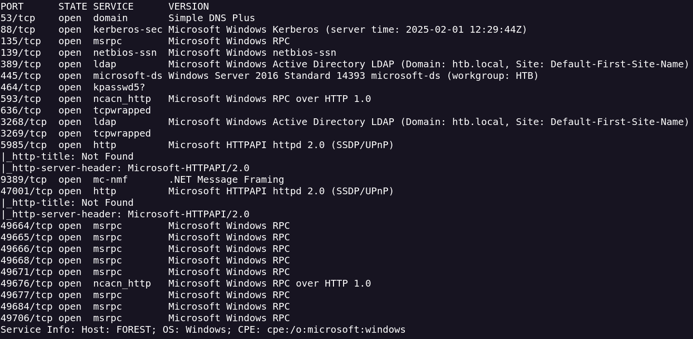
Given the nature of the services, LDAP enumeration was performed against the htb.local domain to gather directory information.
ldapsearch -x -H 'ldap://10.10.10.161' -b "dc=htb,dc=local"A Domain Controller is responsible for handling authentication, authorization, and directory services within an Active Directory environment.
Filtering the LDAP output revealed the presence of service accounts.
ldapsearch -x -H 'ldap://10.10.10.161' -b "dc=htb,dc=local" | grep "svc-"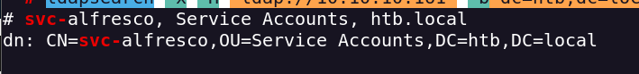
One of the identified accounts was a service account used to run platform-related services.
A Ticket Granting Ticket (TGT) request was performed for the service account in order to retrieve its Kerberos hash.
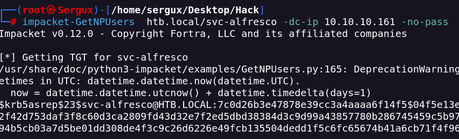
The extracted hash was then cracked offline using John the Ripper.
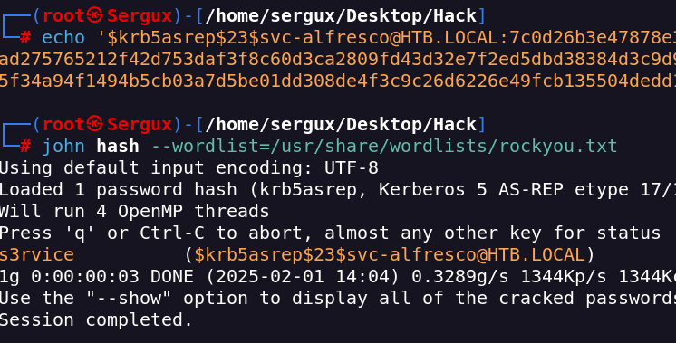
With valid credentials obtained, it was observed that port 5985 was open, indicating that WinRM was available for remote connections.
Using WinRM access, a remote session was established as the alfresco user, allowing access to the user flag.
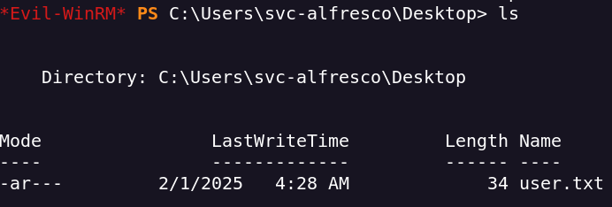
To identify potential privilege escalation paths within the domain, BloodHound was used to collect and visualize Active Directory relationships.
bloodhound-python -d htb.local -u 'svc-alfresco' -p 's3rvice' -gc forest.htb.local -c all --zip -ns 10.10.10.161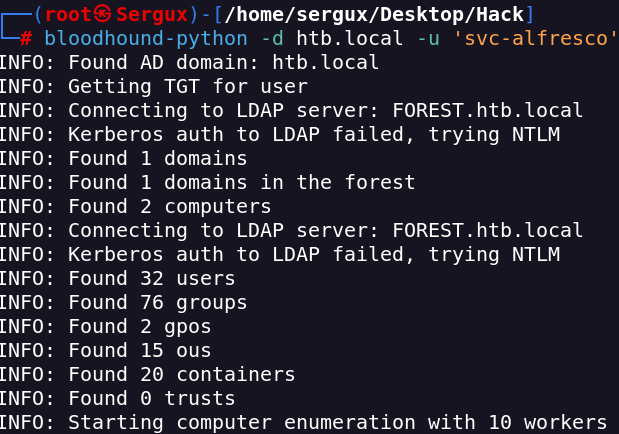
Analysis in the BloodHound GUI showed that the alfresco user was a member of multiple groups.
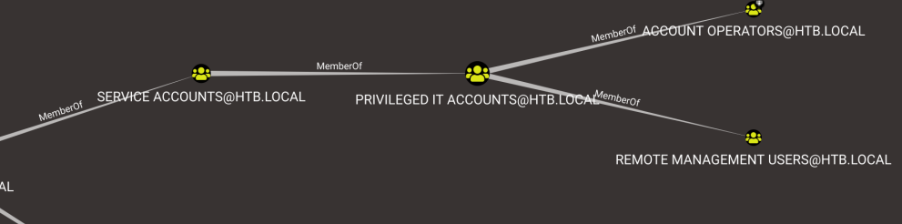
One of the identified attack paths revealed that the Exchange Windows Permissions group had WriteDACL privileges over the domain. The WriteDACL permission allows modification of access control lists on domain objects.
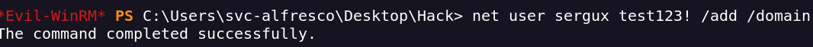
A new user was added to the Exchange Windows Permissions group as well as the Remote Management Users group to extend privileges.
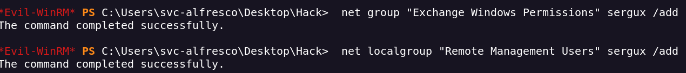
The changes were successfully applied.
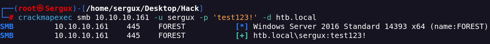
Next, the PowerView script was downloaded and imported into the current PowerShell session. Before importing, the Bypass-4MSI command was used to evade Windows Defender protections.
Using Add-ObjectACL with the obtained credentials, DCSync rights were granted to the controlled user.
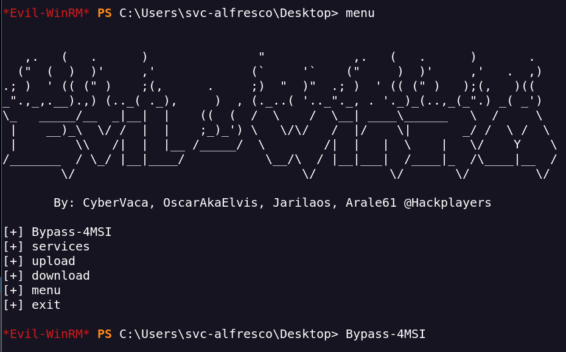
DCSync is a technique that abuses directory replication permissions to extract password hashes directly from the Domain Controller.
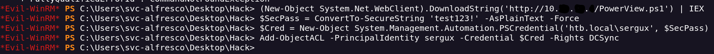
At this stage, the user sergux had DCSync permissions, allowing the extraction of domain user hashes from the Domain Controller.
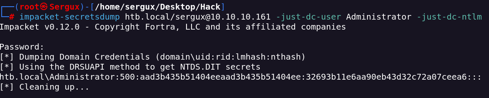
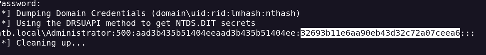
The recovered NTLM hash for the Administrator account was then used to perform a Pass-the-Hash attack with crackmapexec.
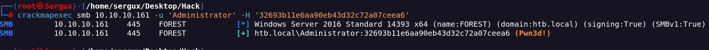
Command execution was also possible using crackmapexec, allowing direct access to the root flag.
crackmapexec smb <IP> -u 'Administrator' -H 'NTML_HASH' -d 'htb.local' -x "type C:\Users\Administrator\Desktop\root.txt"